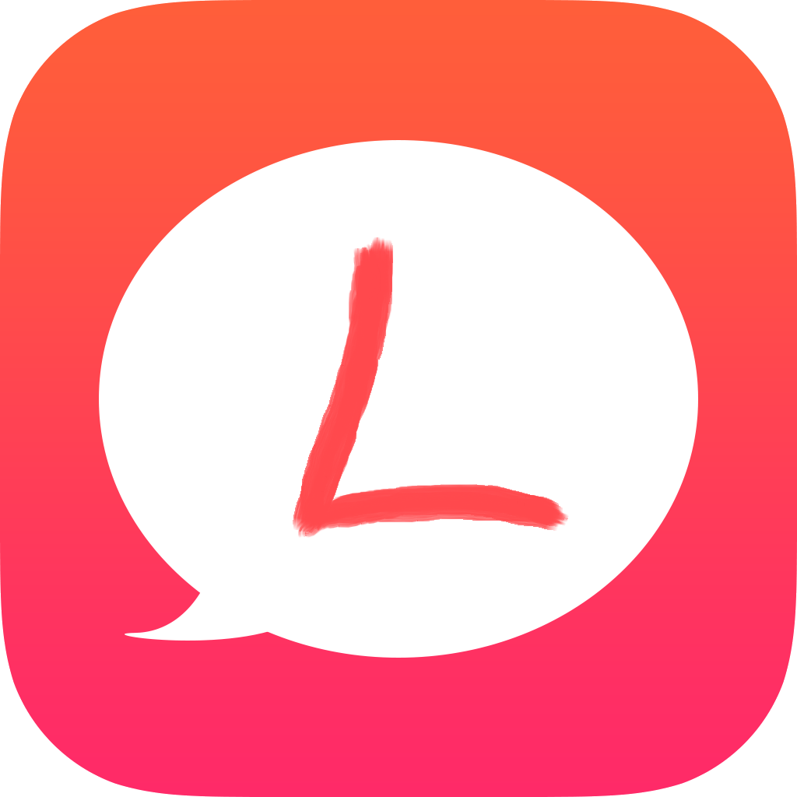

【系統消息】 連線完成，開始聊天吧～
LuTalk 嚕聊
【系統消息】 連線中...【系統消息】 連線完成，開始聊天吧～
{{logItem.state}}
{{logItem.time}}
{{logItem.name}}：{{logItem.content}}
Web
{{logItem.time}}
{{logItem.name}}：{{logItem.content}}
對方已離開，請按離開按鈕退出。